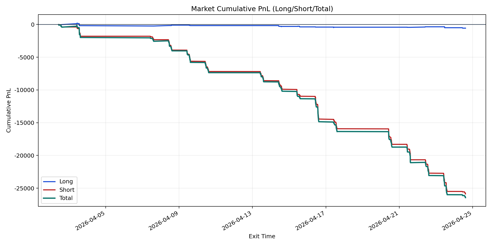
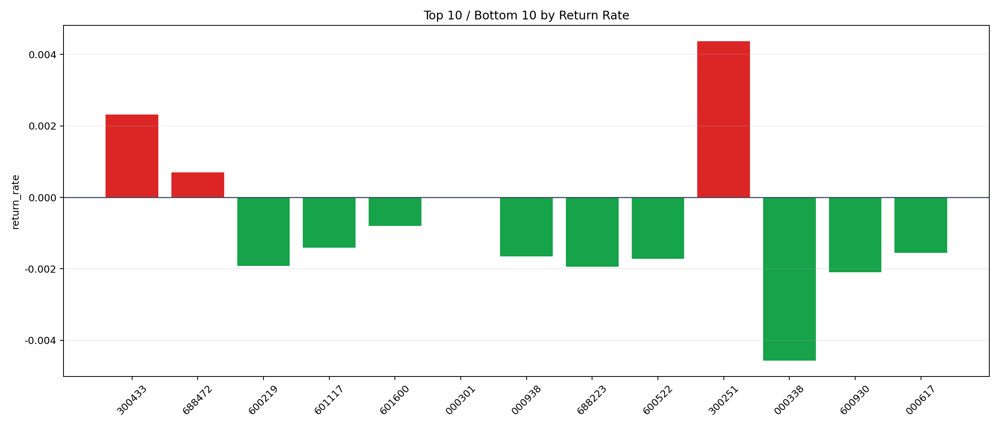

| repo_root | /home/haoranyou/data/output/alpha0.4_1w_5s_3ticks_index_filter/index_weights_300 |
|---|---|
| period_months | 1 |
| period_label | 2026-04-02_to_2026-04-24 |
| start_time | 2026-04-02 10:27:22 |
| end_time | 2026-04-24 14:45:02 |
| n_trades | 1545 |
| n_symbols | 13 |
| total_pnl | -26435.960400000014 |
| long_total_pnl | -566.0779500000053 |
| short_total_pnl | -25869.88245000001 |
| total_entry_notional | 14792290.0 |
| long_entry_notional | 611410.0 |
| short_entry_notional | 14180880.0 |
| total_return_rate | -0.0017871445462467282 |
| long_return_rate | -0.0009258565447081424 |
| short_return_rate | -0.0018242790609609564 |
| top_symbols_by_return | ["300251", "300433", "688472", "000301", "601600", "601117", "000617", "000938", "600522", "600219"] |
| bottom_symbols_by_return | ["000338", "600930", "688223", "600219", "600522", "000938", "000617", "601117", "601600", "000301"] |

